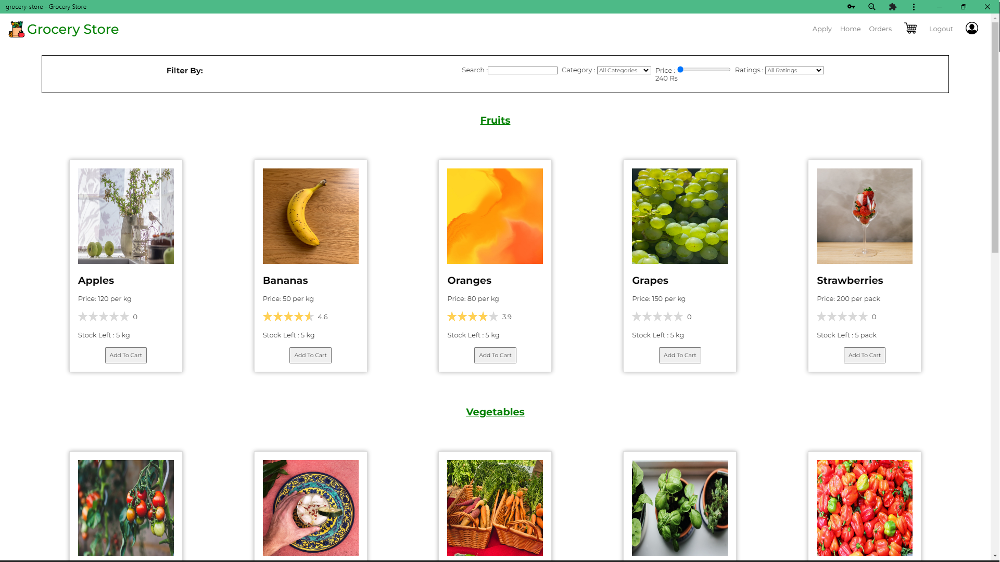

Indian Institute of Technology, Palakkad
Master of Technology in Data Science
CGPA: 7.55
M.TECH · DATA SCIENCE · IIT PALAKKAD
I’m pursuing a Master of Technology in Data Science at IIT Palakkad. My current work explores lightweight speech enhancement for resource-constrained devices.
Bringing an engineering perspective to data, machine learning, and software.
My academic path connects Mechanical Engineering at SRM Institute of Science and Technology with postgraduate study in Data Science at IIT Palakkad. My technical foundation spans programming, data analysis, machine learning, and deep learning.
I am currently reproducing and optimizing a lightweight speech enhancement system inspired by PercepNet. Alongside this work, I have experience building full-stack web applications with role-based access and scheduled workflows.
Python · C · JavaScript · SQL
NumPy · Pandas · Scikit-learn · PyTorch · Matplotlib
MySQL · SQLite · Redis · Vue.js
Git · Linux · CMake · Celery
Object-oriented programming, data structures & algorithms, database management systems
Master of Technology in Data Science
CGPA: 7.55
Bachelor of Technology in Mechanical Engineering
CGPA: 8.35
Chengalpattu · Higher Secondary, CBSE
78.80%
Chengalpattu · Secondary, CBSE
80.8%
Low-complexity speech enhancement
Reproducing and optimizing a lightweight speech enhancement system inspired by PercepNet, with a focus on real-time operation on resource-constrained devices.
A grocery platform with separate interfaces for customers, managers, and administrators.

Python · Flask · Vue.js · SQLite · Redis · Celery
IIT Madras
NPTEL · IIT Kanpur
Udemy
CONTACT
For academic discussions, collaborations, and professional opportunities.